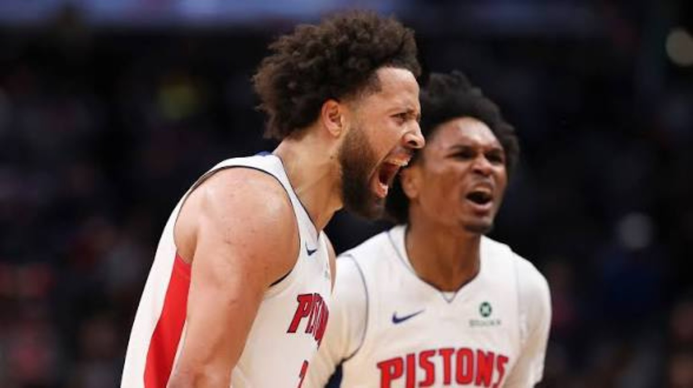
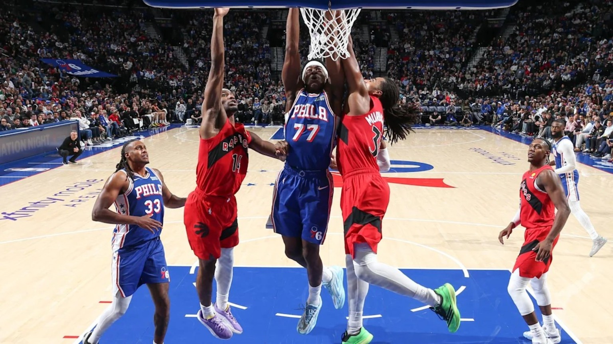
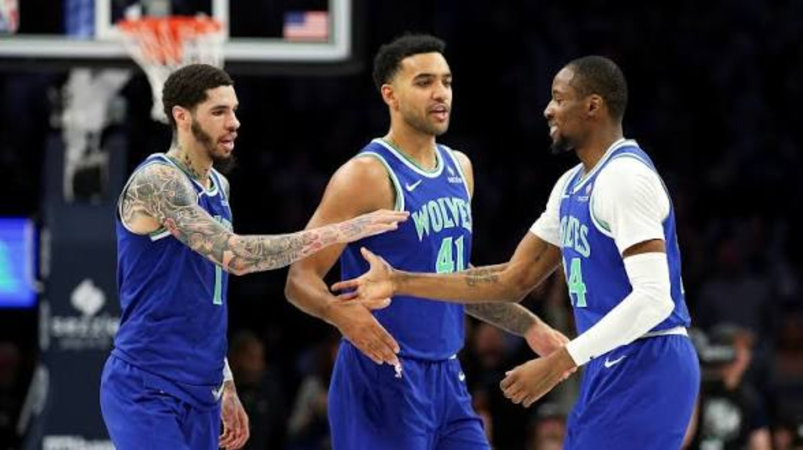
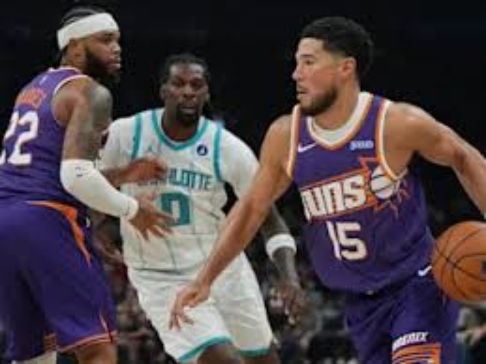

CADE’S 52. MINNESOTA’S MESSAGE. FOUR GAMES, NO EASY ANSWERS.
Cunningham makes history in double overtime. Minnesota overwhelms Dallas. Philadelphia’s depth wins the middle quarters. Booker survives Charlotte’s turnover storm.
All four scheduled games final · Prepared for editorial publication · Scores and statistics checked against November 12 box scores

Cade Cunningham celebrates with a Detroit teammate — the cover image for the November 12 NBA Nightcap.
Cade Cunningham rises for a contested shot against Washington, with AJ Dybantsa defending.
FINAL · 2OT
BOX SCORE SPOTLIGHT
Cade Cunningham: 52 PTS, 5 REB, 11 AST, 0 TO; Ausar Thompson: 17 PTS, 11 REB, 11 AST; Paul Reed: 13 PTS, 11 REB. Washington: Trae Young 37 PTS, 14 AST; Alex Sarr 30 PTS, 9 REB; Anthony Davis 30 PTS, 15 REB.
This was not merely a big scoring night. It was a franchise guard controlling a marathon without surrendering the ball. Cade Cunningham scored 52 on 16-of-25 shooting, hit 17 of 18 free throws and delivered 11 assists without a turnover across 48 minutes. For a Pistons team trying to establish its place in the East, that combination of aggression and care is a more meaningful signal than the raw point total.
Washington did not fold. Trae Young supplied 37 points and 14 assists, Alex Sarr scored 30 on 12-of-14 shooting, and Anthony Davis put up 30 and 15. The Wizards scored 62 points in the paint and outrebounded Detroit 50–47. Their problem was possession discipline: 18 turnovers to Detroit’s 12, a six-possession gap in a game decided by four after two overtimes.
Turning point: after the teams scored 11 apiece in the first overtime, Detroit won the second extra period 12–8. Cunningham’s late scoring and clean decisions mattered even more as fatigue set in. Ausar Thompson’s 17-11-11 triple-double and Paul Reed’s plus-25 bench impact provided the support that kept this from becoming a one-man rescue mission.
What it means: Detroit moves to 8–3, and Cade has given the East another reason to treat the Pistons seriously. Washington drops to 4–9 but can point to a genuinely competitive offensive performance; tightening the turnover count is the immediate priority.
GAME 02 / FINAL
Toronto Raptors 112, Philadelphia 76ers 123

Philadelphia attacks the rim against Toronto in the 76ers–Raptors matchup.
Toronto had the kind of start that can steal a road game, winning the first quarter 33–24. Philadelphia responded with a 36–27 second period and a 36–27 third, turning a nine-point deficit after twelve minutes into a nine-point lead after thirty-six. The Sixers did not need one superhuman scorer; they needed their offense to create good shots across multiple lineups.
Maxey finished with 27 points and eight assists, while Embiid contributed 20. VJ Edgecombe’s 15 points, eight rebounds, eight assists and zero turnovers illustrated the value of a young connector who can move the ball without sacrificing pressure. Anfernee Simons changed the geometry off the bench, hitting five of six threes for 17 points; Kentavious Caldwell-Pope added 11 and five assists.
Turning point: the middle two quarters, when Philadelphia outscored Toronto 72–63 and found the perimeter accuracy the visitors could not match. The Sixers hit 43.3 percent from three and assisted on 31 baskets, compared with 26 assists for Toronto.
What it means: Philadelphia improves to 10–3 and looks increasingly capable of winning without making every possession a Maxey isolation. Toronto falls to 5–7, but RJ Barrett’s 31 and 14 plus Quickley’s 26 show the offensive pieces can produce; defending across four quarters remains the test.
GAME 03 / FINAL
Dallas Mavericks 94, Minnesota Timberwolves 133

Minnesota players celebrate together during the Timberwolves–Mavericks matchup.
This was a 39-point warning shot from Minnesota and an uncomfortable measuring-stick night for Dallas. The Wolves won every quarter, building a 67–52 halftime lead and then crushing the third 36–17. They shot 57.8 percent overall and 46.9 percent from deep; Dallas managed only 37.2 percent from the floor.
Minnesota did not rely on a single superstar performance. Bones Hyland scored 24 with eight assists off the bench, LaMelo Ball delivered 22 and nine while burying six threes, and Ayo Dosunmu scored 18. Their spacing forced Dallas into rotations, and the Wolves converted those advantages into a staggering 74–42 edge in paint scoring and a 50–38 advantage on the glass.
Turning point: the third quarter ended the contest. Minnesota scored 36 while Dallas mustered 17, turning a sizable lead into a blowout. Cooper Flagg finished with 12 points and seven rebounds, Kyrie Irving with 10, and Dallas’s bench-leading Zaccharie Risacher supplied 22. The Mavericks had no reliable way to stop the avalanche or answer it.
What it means: Minnesota rises to 9–3 and has a compelling case as one of the West’s most balanced teams. Dallas slips to 7–5; this does not erase its promising young core, but it exposes the distance between flashes of offensive talent and a full, disciplined contender-level performance.
GAME 04 / FINAL
Charlotte Hornets 96, Phoenix Suns 101

Devin Booker handles the ball against Charlotte during the Suns–Hornets matchup.
Phoenix escaped a game in which the rebounding and shooting numbers suggested Charlotte had every opportunity to win. The Hornets grabbed 52 boards to the Suns’ 31 and shot the same 41.3 percent from the field. But they committed 27 turnovers while Phoenix gave it away only eight times. That nineteen-turnover difference overwhelmed almost every other advantage.
Devin Booker scored 30 points on 12-of-20 shooting, made four threes and added seven assists and three steals. Charlotte countered with 21 from Coby White and 16 from Naz Reid, but the Hornets never established a dependable late-game possession pattern. They led 76–72 after three quarters; Phoenix then won the fourth 29–20.
Turning point: the fourth quarter, when Phoenix reversed a four-point deficit through better execution and fewer empty trips. The Suns did not shoot the lights out—30.2 percent from three—but their restraint protected them from the self-inflicted mistakes that decided the night.
What it means: Phoenix reaches 5–6, with Booker once again serving as its late-game stabilizer. Charlotte falls to 4–8 and must address ball security immediately. Twenty-seven turnovers are not a small statistical blemish; they are a game plan handed to the opponent.
Sources: NBA schedule and scores; November 12, 2026 box scores from Reko and RealGM. Reporting and analysis written by 4 Da Kulture. No unverified photos added.